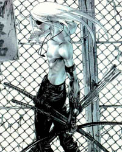
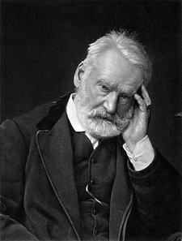

Forums galactiques > Taverne galactique : lieu de discussion informel > Salle de duel
Pages : 1 2 ... 18 19 20 ... 22 23
| Elÿen Delÿngard Réputation à la taverne : 15  12/01 ETU 20:12 | Score : 0 Détails Elÿen entra dans la salle discretement...ses pas rapides ne faisaient aucun bruit
Son torse était nu et trois sabres pendaient à son coté son visage était caché par ses cheveux blancs qui lui cascadaient dans le dos et sur le visage , cependant dans l'ombre de ceci , brillaient deux yeux d'une paleur étonnante Il s'assit dans un coin sale et sombre...cela complétait la panoplie du parfait psychopathe il regardait le duel d'un regard indifférent | ||
| Amenhotep Réputation à la taverne : 93  13/01 ETU 13:54  | Score : 0 Détails Il est en train de me faire quoi ...
Je n'hesite pas ... Ca m'a déjà couté quelques doitgts auparavant ... Le Thotien arma sa lance à plasma, et tira plusieurs boules dorés sur son ennemi du jour ... Puis, il changea le sens de son arme, et se mit en position de défense, malgré ses trois doigts manquants ... Pourvu que je l'encaisse, sinon, je suis mal ... | ||
| Koronag av Vikern Réputation à la taverne : 62  26/01 ETU 20:53 | Score : 0 Détails Koronag arpentait les grandes salles vides. Il détacha avec précaution un vieux sabre du mur et fit quelques passes avec. Il d'essoufflait décidément trop vite. Ses cheveux avaient commencé à grisailler. Le grand homme s'assit. Le poids de ses 3589 ans commençait à se faire sentir. Il avait battu Zarghâl le Vieux, mais à quoi servait le titre du plus âgé des Vikern, qui serait d'ailleurs battu ^tîot ou tard, s'il mourait dans son lit comme un infirme? Il en pouvait pas accepter cela. Il fallait quelque chose.
Un sourire maniaque tordit ses traits. Patience, se dit-il. Il releva la tête et enchaina les moulinets d'armes contre des adversaires imaginaires en en attendant un réel... | ||
| Baby_comdant Réputation à la taverne : 54  26/01 ETU 23:55 | Score : 2 Détails Baby_comdant entra brusquement dans la salle. Sur sa taille pendait un court sabre.
Fiere de se battre avec les grandes tailles, il provocat enormement de duel. Fiere d'etre l'un des champions de son pays, il provoqua les meilleurs. Puis provoqua la plupart des duellistes de la salle. Resultat, il reparti bredouille, couvert de plaies, sans aucune victoire, triste d'etre aussi minable. Et de toute fason, les babys n'était pas conçut pour se battre au corp à corp avec les autres especes. | ||
| Koronag av Vikern Réputation à la taverne : 62 01/02 ETU 19:48 | Score : 1 Détails Cela faisait des jours que la salle n'avait pas été ouverte. Un jeune commandant, qui passait par là y entra, curieux de voir ce que cette salle pouvait receler. Il contempla les murs couverts de fresques décrivant les plus grandes batailles qui avaient eu lieu entre ces murs. Koronag contre son demi-frère Vetinari. Koronag contre Grabeuh et Gigiman. Et d'autres, dont le nom s'était perdu.
Le jeune commadant s'avançait puis il tourna la tête vers un endroit surélevé. Il émit un petit cri: Sur un trône d'une pierre noire et lisse était assis Koronag, une main sur l'accoudoir en forme de crâne, l'autre sur la garde de l'immense épée qui était placée sur ses genoux. Il était abolument immobile et ne bougea pas lorsque le jeune homme s'excusa, ni lorsque celui-ci s'avança et passa une main devant ses yeux noirs. Le jeune homme voulut le secouer, mais se rendit compte que le grand chef du clan Vikern était figé, aussi dure que la pierre et tout aussi froid. Le jeune homme sortit, non sans jeter un dernier regard au commandant qui avait vu naotre la galaxie, et qi était maintenant figé, comme une statue, entre ces murs qui montraient ses plus hauts faits d'armes. La poussière avait déjà commecé à s'amasser sur le rejeton de Mars... | ||
| Vincent Valentine Réputation à la taverne : 70  02/02 ETU 17:18 | Score : 0 Détails Une silhouette sortit d'un coin d'ombre...
Vincent fit un pas, approchant du centre de la salle. Du bout des doigts, il rajusta son chapeau. Son habit sombre semblait être fait de ténèbres... L'individu eut un rire amusé, se planta au milieu de la pièce, attendant le premier fou qui tenterait de le défier... | ||
| Madame Démocratie Réputation à la taverne : 47  02/02 ETU 17:24 | Score : 0 Détails Erika s'approcha du personnage habillé tout en noir.
Suis pas d'humeur aujourd'hui faut que je me défoule. Elle alla sur le ring. Alors tu viens te battre ou tu attend que l'apocalypse arrive ? | ||
| Vincent Valentine Réputation à la taverne : 70 02/02 ETU 17:26 | Score : 0 Détails Oh...
Si l'on me propose de me battre, je n'ai aucune raison de refuser... Il disparut, pour réapparaître au centre de l'arène en une fraction de seconde. Je suis prêt. | ||
| Madame Démocratie Réputation à la taverne : 47 02/02 ETU 18:26 | Score : 0 Détails ESSIN
Une boule de feu de couleur blanche se forma dans la main d'Erika Voyaummmm La boule de feu se dirigea vers l'individu ... Volumta La boule de feu forma une corde qui se mit alors autour de l'individu ... (ps :N'essayer pas de traduire ,vous pourrez toujours chercher ,ces mots magiques ne sont pas traduisible) | ||
| MS-695 Réputation à la taverne : 3  03/02 ETU 15:27 | Score : 0 Détails J'arrivai dans la salle, délivra celui entouré de la corde de feux et renvoya cette corde chez son expéditeur et tout ça par la pensé.
| ||
| Madame Démocratie Réputation à la taverne : 47 03/02 ETU 16:41 | Score : 0 Détails [hrp :tu apprendra qu'on intervient pas dans un duel ,dans cette salle entre deux joueurs donc ton message n'est pas recevable .
Et arrête de flooder partout ,sa commence a être chiant ./hrp] | ||
| de Pièrouge Réputation à la taverne : 28  06/02 ETU 19:57 | Score : 0 Détails Le duc de Pièrouge entra pour la première fois dans la salle de duel. Il regarda les grandes fresques dépeignant les plus grands combattants de la salle, puis son regard se posa sur la forme massive et figée de Koronag av Vikern. Il monta les marches et scruta le grand chef de guerre. Puis il descendit et salua Dame Démocratie avant de sortir.
| ||
| tigre rouge Réputation à la taverne : 51  10/02 ETU 21:07 | Score : 0 Détails Tigre rouge entra dans la salle de duel. Il en avait entendu parlé parfois, et était de plus en plus tenté de la découvrire. A présent, il y était et examinait chaque recoins, comme à son habitude lors qu'il découvrait un endroit nouveau.
A présent, il ne manquait plus qu'une chose : un adversaire à sa hauteur ! | ||
| Arya av Vikern Réputation à la taverne : 101  18/02 ETU 23:52 | Score : 2 Détails Arya pénétra dans l'ancienne salle d'entraînement personel de son oncle Koronag, le Seigneur du palais du deuil ...
Que de poussière s'amoncelait dans ce noble lieu ou la gloire des Vikern avait été prouvée maintes fois ... Elle marchait, au grès de ses souvenirs ... Ses premières passes avec un katana ... il y avait encore une trace sur un des murs ... une large entaille d'environ un centimètre de profondeur dans l'obsidienne ... Les régénérateurs ou tant de fois elle avait vu, étant petite, son oncle et Grabeuh arriver en pièces détachées ... Les traces de sang caillé ... Un sourire passa sur ses lèvres ... Elle se remémora la première fois où Koronag lui avait prété la grande épée de la famille ... Tant de souvenirs l'assaillaient ... Son premier combat ... son premier échec ... sa première victoire ... sa première mort ... Elle continuait à marcher vers le fond de la salle quand soudaint, elle vit son oncle, assis sur son trône ... Elle se raprocha, curieuse ... toucha le corps pétrifié, l'épée au coté ... Une larme coula sur sa joue ... Elle déposa un baiser sur la joue de marbre, puis s'endormit ... roulée en boule sur les genoux de sa dernière famille ... | ||
| Alfa3 Réputation à la taverne : 2  19/02 ETU 10:43 | Score : 0 Détails Alfa3 pénétra dans la salle avec un regard qui scrutait les peintures du mur,chaques pas lui donnait encore plus l'envie de tuer.Il sortit une baionnette venant de son fusil et dit à toute la salles:
-J'attends un adversaires qui sera courageux et qui n'aient pas peur de mourir. Alfa3 ne savaient que manier le fusil et la mitrailleuses,et y allait sabs doute y laisser sa vie. | ||
| Cassandra Réputation à la taverne : 316  19/02 ETU 13:36 | Score : 1 Détails Tu veux te battre?
La voie avait retenti dans toute la salle, Alpha3 chercha du regard, tournant mainte et mainte fois la tête. C'est alors qu'une grande masse bleu apparu de nul par piqua en direction du sol. L'impact fut violent, provoquant une déflagration tel que Alpha trois du se mettre à quatre pattes pour ne pas s'envoler. Le nuage de fumée se dissipait peu à peu, laissant apercevoir le combattant à Alpha3. Une silhouette, genou au sol, appuyé sur une lance à tête large incrustée d'un germe lumineux, attendait, tête baissée, au milieu des cercles concentriques crée par l'impact. La tête se releva sans crier gars et Alpha3, qui c'était relevé arborant une position défensive, pu voir son adversaire : C'était Cassandra en personne. Elle fixa Alpha3 d'un air assoiffé de combat, les yeux scintillant d'un blanc des plus pur. _Alors comme ça tu veux combattre, lança sombrement Cassandra, s'en quitter sa position, est-tu bien conscient de ce que tu voeux? Je l'espère car j'ai besoin d'entraînement!!! D'une vitesse impensable Cassandra se releva et se fendit! Alpha3 dans un réflexe bestial sauta en arrière pour éviter le coup de Cassandra. Il reprit appui, mais quelque chose était au bout de la lance de Cassandra : Des poiles de crinière... | ||
| Alfa3 Réputation à la taverne : 2 19/02 ETU 13:53 | Score : 0 Détails Alfa3 sortit alors sa baionnette,puis deux fusil il en donna un à Cassandra et la battaille commença pour alfa3.
Le premier coup de fusils d'alfa3 a siflé à l'oreille de Cassandra.Celui de cassandra faisait un trou dans les cheveux d'Alfa3. Quand Cassandra rechargea son fusil,alfa3 lui tire et vise sa jambes,elle était devenu immobile.Ensuite,il sortit sa baionnettes la plaça sous la gorges de Cassandra réfléchie,et se dit quil a gaché sa vie.Il donnait son fusil à Cassandra et lui de tirer dessus... | ||
| Cassandra Réputation à la taverne : 316 19/02 ETU 14:15 | Score : 0 Détails Cassandra se demandaient encore comment une aussi bonne combattante quelle pouvait se faire prendre dans un piège sans bouger. Sortant de ses pensées elle fixa Alpha3 d'un air ironique. Elle incanta quelques mots et brisa le charme qui retenait sa jambe prisonnière. Jetant l'arme à feu et reprenant sa lance elle lança à son opposant :
_D'une je combats toujours avec ma lance, Deux c'est facile de te tirer comme ça! Affronte ton destin!!! Trois ne croit pas t'en tirer aussi facilement! Quatre laisses un peu de suspense quand tu écris. Décrit un peu se qui se passe dans ta tête, le paysage si tu veux, l'analyse de la bataille etc, essaie de faire de l'action et avec ton perso mais aussi avec celui de l'autre.. Après se ne sont que me conseils mais ça évite les Rp de 3 lignes... Cassandra se remis alors en garde, mais cette fois si elle laissera le premier assaut à Alpha3 _Combat ton destin, rebelle-toi, défoule toi dans cette bataille, sert toi de se désespoir pour en faire une force, enivre toi de la colère qui bouille dans tes veines, mêle s'y toute tes forces et tout tes sentiments : Fais moi exploser cette salle de rage!!! Rugit Cassandra Alfa3 se redressa, Cassandra sentit une immense force, ce... ce n'est pas possible, c'est Alpha3? Est-il arrivé... Elle n'eu pas le temps de finir ses réflexions quelle fut sortit de ses pensée : Alpha3 lui fonçaient dessus... | ||
| Arya av Vikern Réputation à la taverne : 101 19/02 ETU 15:36 | Score : 0 Détails Arya, réveillée par le bruit du combat ouvrit un oeil, puis l'autre ...
Se remémorant sa soirée d'hier, elle compris qu'elle était encore sur les genoux de la statue de son oncle bien aimé. Elle se leva, puis observa quelque temps le déchaînement de violence qui s'opérait devant elle, les balles fusaient et ricochaient contre les murs dans un éclair de lumière aveuglante. Alfa3 tirait sans relâche tandis que Cassandra courait dans tous les sens ainsi que sur les murs pour lui échapper. Arya sentait que la salle commençait à renaître ... D'un bond, elle atteignit le haut d'une des colonnes d'obsidienne. Elle dégaina l'énorme épée héritée de Koronag ... Une sombre fumée s'en dégageait et elle semblait véritablement détruire la lumière autour de sa porteuse. Arya esquissa un mouvement, se mit en garde et sauta au sol en contrebas de 10 mètres. Elle se remit en garde et lança : Hey ! Vous deux ! Un combat en équipe, ça vous tente ? Un quatrième combattant veut-il bien se joindre aux réjouissances ? Nous nous répartirons en équipes de deux. Toutes armes autorisées, du cure-dents au bilboquet clouté en passant par le naginata et la double mortensern ! Explosif supérieur à une grenade interdits ! | ||
| Shiranui Réputation à la taverne : 227  19/02 ETU 15:51 | Score : 0 Détails Loup Blanc, qui entendit les paroles d'Arya, se précipita dans l'arène
en bondissant comme cette dernière pour atterir 10 mètres plus bas. Je vais reprendre un concept qui me plaît: agir avant de réfléchir. Je me bas aux crocs et aux griffes. Qui se met avec moi ? Shiranui "Loup Blanc" risquait d'y laisser sa fourrure si blanche. Il n'aimait pas la violence gratuite, mais ce combat était une occasion pour lui de prouver de quoi il était capable. Et c'était juste un combat d'amis... Et puis il devait venger Amenhotep qui avait perdu des doigts dans ce jeu idiot... |
Pages : 1 2 ... 18 19 20 ... 22 23
Forums galactiques > Taverne galactique : lieu de discussion informel > Salle de duel